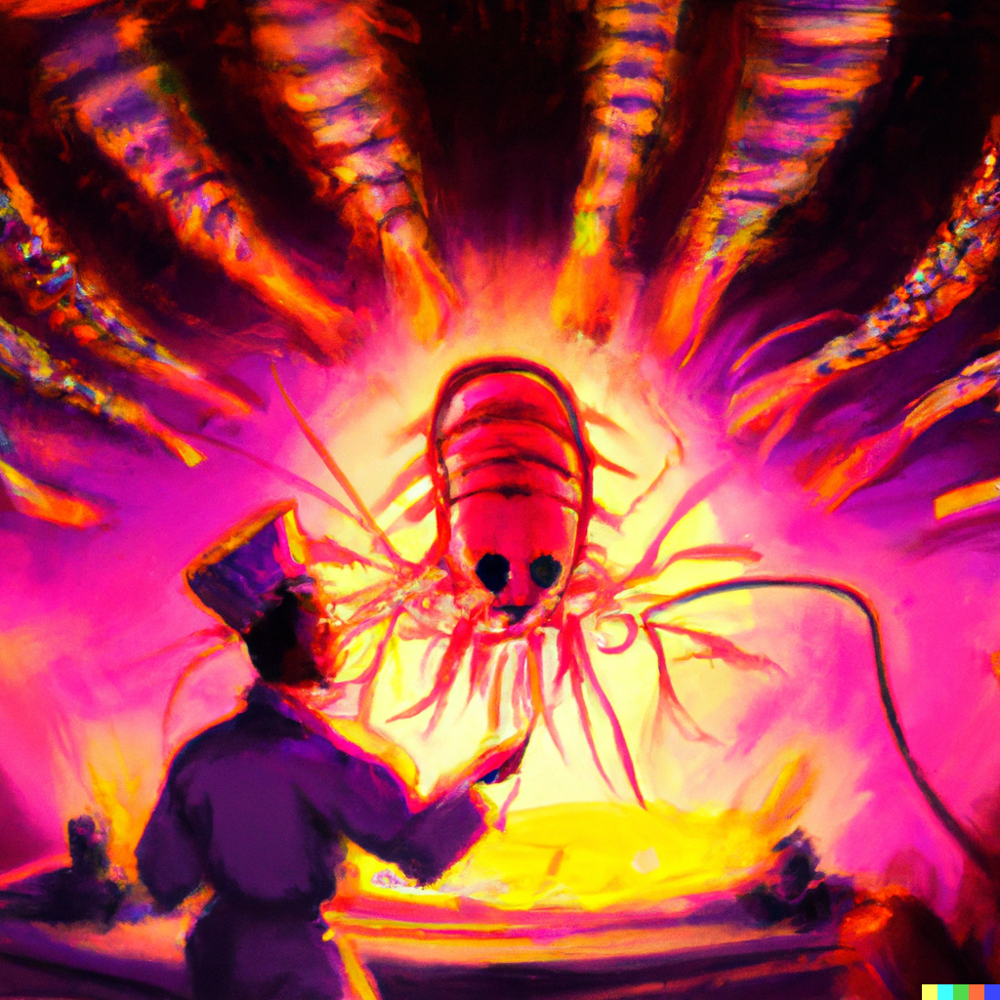

Attention all shrimp lovers and spiritual seekers! Do you want to take your love of shrimp to the next level?
SHRIM-MEDALLION: Looking for a way to show off your love of shrim and your devotion to the Shrim Alternative Healing Center? Look no further than our shrim-medallion! Made from real shrimp shells (ethically sourced, of course), this medallion will not only proclaim your allegiance to the shrim gods (SHRIIIIIIIM BE PRIASED) but also make you the envy of all your shrim-loving friends (NO OTHER FRIENDS ALLOWED). Get it now for the low, low price of $179.99!
SHRIMP-TOOTHPASTE: Do you want to keep your teeth clean and fresh while also enjoying the flavor of shrimp? Then you need our exclusive Shrimp-Toothpaste! Made with real shrimp extract and mint, this toothpaste will not only leave your mouth feeling clean but also give you a taste of the divine every time you brush your teeth. Order now for only $59.99!
Shrimp-songs sung by shrimp MP3: Are you tired of listening to the same old boring music? Do you want to hear the sweet, melodious voices of shrimp singing hymns of praise to the shrim gods? Then you need our Shrimp-songs sung by shrimp MP3 album! Featuring all the hits, including "Under the Seafood," "Rock Lobster Redemption," and "Shrimway to Shrim Heaven," this album will transport you to a world of shrimp-filled musical bliss. Download now for only $39.99!
Signed photo of our shrimp prophet: Do you want to own a piece of Shrim Alternative Healing Center history? Then you need our signed photo of our Shrim prophet! This beautiful photo, signed by the prophet himself, is a must-have for any true believer. Hang it on your wall, carry it with you everywhere you go, or just gaze at it lovingly for hours on end. Get it now for just $99.99!
